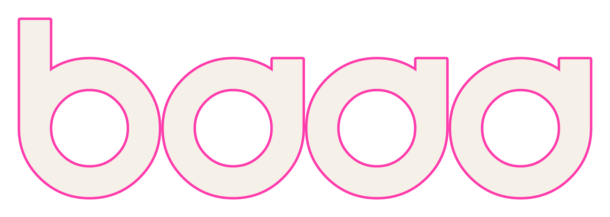
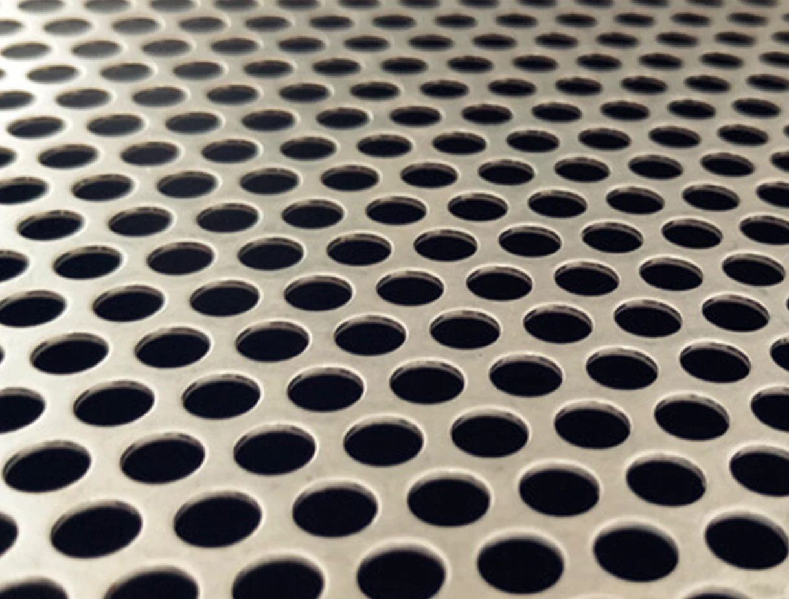

BAAABS—the Bad Ass Amazingly Awesome Black Sheep—is
my lighthouse for misfits and outcasts.
She is a towering, fire-eyed black sheep with a rooftop dance floor,
built in Seattle and bound for Burning Man.
Her fiery flatulence beckons those that find more freedom outside a flock than within one
What is BAAABS?
An Ovine Dancefloor with IBS.
BAAABS is another geodesic sheep mutant vehicle like BAAAHS, with a rooftop dance floor, world-class sound, and a DJ booth—but with a fiery twist.
The lineage

From school bus to showgirl
Earl's Drag:
Transforming a school bus into BAAABS
One practical layer at a time, a bus becomes a black sheep built
to survive dust, dancing, and terrible ideas executed well.

Unpainted aluminum sample from the earlier material study. The planned finish is black.
The skin I have in mind
Black metal. Light through the holes.
Each panel is a flat, convex sheet that mounts over the welded steel frame. Staggered round holes let the lighting inside show through the black finish.